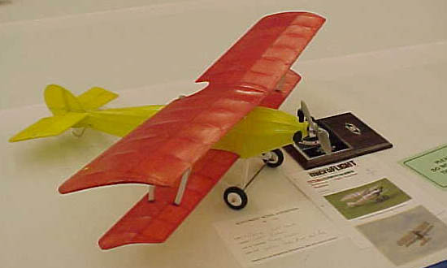

Jerry Gordon of Yakima, WA. 1st in Sport Biplane at the 2002 Northwest Model Exposition. Photos by Chuck Clemans
Return to
my original version | Other Versions Index
Copyright 2003, Thayer Syme. All rights reserved